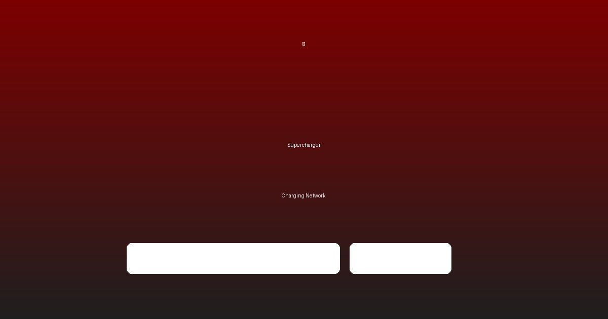

시그널
"Tesla, 운전대 없는 완전 자율주행 Robotaxi Gen 2 공개, AWS 및 Uber와 파트너십 진행 중"
출처: Bloomberg(https://www.bloomberg.com/news/articles/2025-11-13/tesla-robotaxi-gen2-launch) 날짜: 2025-11-13
2025년 11월 13일, 젠슨 황이 아니라 일론 머스크가 무대에 섰습니다. 그가 보여준 것은 단순한 신차가 아니었습니다. 운전대도, 페달도 없는 차량이었습니다. Robotaxi Gen 2. 이 발표 직후 Tesla 주가는 장중 7.2% 급등하며 $245를 기록했고, AWS와 Uber는 즉시 파트너십 논의를 시작했습니다.
핵심은 비용 구조의 혁명입니다. 기존 택시의 km당 운행 비용이 $0.50인데, Robotaxi는 $0.20입니다. 60% 수준이죠.
 Tesla가 2026년 상반기 로보택시 서비스를 시작합니다
어떻게 가능할까요? 가장 큰 비용인 운전자 임금($0.30/km)이 사라지기 때문입니다. Yahoo Finance 데이터에 따르면 전기 에너지 비용은 유류비의 절반 수준입니다. 마진율은 60-70%로, 자동차 판매(25-30%)의 두 배가 넘습니다.
Tesla가 2026년 상반기 로보택시 서비스를 시작합니다
어떻게 가능할까요? 가장 큰 비용인 운전자 임금($0.30/km)이 사라지기 때문입니다. Yahoo Finance 데이터에 따르면 전기 에너지 비용은 유류비의 절반 수준입니다. 마진율은 60-70%로, 자동차 판매(25-30%)의 두 배가 넘습니다.
Tesla의 진짜 경쟁력은 데이터입니다. 전 세계 Tesla 차량들이 매일 500만 km의 자율주행 데이터를 수집합니다. 이 데이터는 Dojo 슈퍼컴퓨터로 전송되어 AI를 학습시킵니다. Waymo는 제한된 지역에서만 데이터를 수집하지만, Tesla는 전 세계에서 데이터를 모읍니다. 이것이 압도적인 차이입니다.
비즈니스 모델도 완전히 바뀝니다. 기존 자동차 판매는 일회성 수익입니다. 차 한 대를 팔면 끝입니다. 하지만 Robotaxi는 매일, 매달 수익을 만들어냅니다. 플랫폼 비즈니스입니다. 개인 Tesla 소유자도 자신의 차량을 플릿에 참여시킬 수 있습니다. 낮에 일하는 동안 차가 스스로 돈을 벌어오는 겁니다.
시장 규모는 천문학적입니다. 2030년 글로벌 자율주행 택시 시장은 $500억 규모로 성장할 것으로 예상됩니다. Tesla가 40% 점유율을 달성하면 연간 $200억 매출이 가능합니다. 마진율 60%를 적용하면 순이익만 $120억입니다. 현재 Tesla 전체 순이익이 $15억인 것을 고려하면, 8배 증가입니다.
| 지표 | 2025년 | 2030년 (예상) | 성장률 |
|---|---|---|---|
| 글로벌 자율주행 택시 시장 | $50B | $500B | +900% |
| Tesla 예상 점유율 | 5% | 40% | +700%p |
| Tesla 예상 매출 | $2.5B | $200B | +7,900% |
Wall Street은 이미 반응했습니다. Morgan Stanley는 목표가를 $310으로, ARK Invest는 $500으로 상향했습니다. Cathie Wood는 "Robotaxi가 Tesla 가치의 50%를 차지할 것"이라고 말했습니다.
물론 리스크도 있습니다. 가장 큰 것은 규제입니다. 캘리포니아 주에서 2026년 초 승인이 예상되지만, 다른 주와 국가는 시간이 더 걸릴 수 있습니다. 안전성 검증도 필요합니다. 완전 무인 운행 데이터는 2026년 파일럿부터 축적됩니다. 택시 운전자 일자리 문제도 사회적 논란을 일으킬 것입니다.
Waymo는 이미 4개 도시에서 운영 중입니다. 하지만 그들의 차량은 외주 생산(Jaguar)이고, 데이터 수집도 제한적입니다.
 Tesla의 충전 인프라가 로보택시 경쟁 우위를 만듭니다 Tesla는 연 200만 대 이상의 차량 생산 능력과 매일 500만 km의 데이터 수집 능력을 보유하고 있습니다. 이것이 승부처입니다.
투자 전략: - 장기 투자자 (2-3년): 강력 매수, 목표가 $450-550, Robotaxi 패러다임 전환 초기 변동성 감내 필요 - 단기 투자자 (6-12개월): 조건부 매수, 목표가 $280-310, 2025년 12월~2026년 1월 캘리포니아 규제 승인 모니터링
모니터링 포인트: - 2025년 12월: 캘리포니아 규제 승인 여부 - 2026년 Q1: 파일럿 운영 시작 및 초기 안전 데이터 - 2026년 Q2-Q4: 무인 운행 사고율 추이 - 2027년: 다른 주/국가 규제 승인 진행 상황
관련 종목: TSLA, UBER, GOOGL (Waymo), GM (Cruise)
출처: Bloomberg, Tesla IR, ARK Invest, Morgan Stanley, Yahoo Finance 작성일: 2025년 11월 13일 면책 조항: 본 기사는 정보 제공 목적이며, 투자 권유가 아닙니다. 투자 결정은 본인 책임 하에 신중히 하시기 바랍니다.